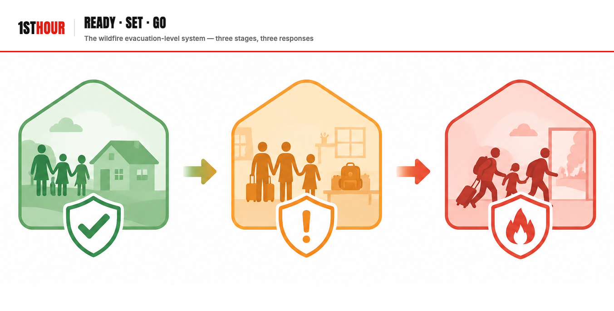
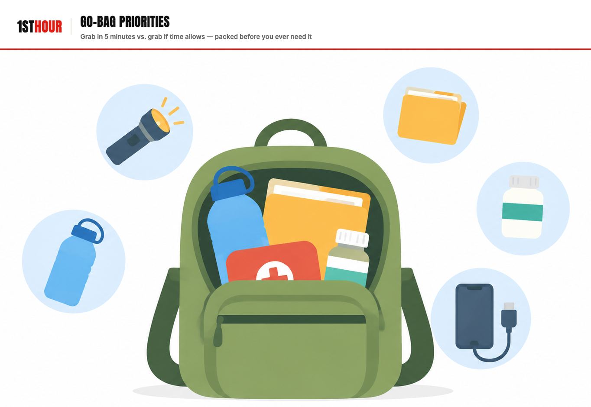

Wildfire Evacuation
A wildfire evacuation gives you hours or days, not minutes — but waiting for the official "go" order is a documented way people run out of time anyway. The Ready-Set-Go system, go-bag priorities, and what to do if you wait too long.
1. Why the First Hour (and the Preceding Days) Matter
Most of the emergencies in this library give you seconds or minutes to decide. A wildfire is different, and that difference is exactly what makes it dangerous in its own way. A fast-moving wind-driven fire can go from "smoke on the horizon" to "your neighborhood is under a mandatory evacuation order" in a matter of hours — sometimes less — but it can also smolder for days before conditions shift and it turns toward your community without warning. That longer runway feels safer. It isn't. It's the reason wildfire evacuations produce a well-documented, repeating failure pattern: people who had hours of notice still end up leaving too late, driving through active fire conditions, or not leaving at all.
The problem is almost never that people don't care about their own safety. It's that "wait and see" feels like the reasonable, non-alarmist choice right up until it isn't — and by the time smoke, ash, and darkened skies make the danger undeniable, roads are congested, visibility is dropping, and the fire itself may be moving faster than evacuation traffic can move away from it. Every fatality-review report from major wildfire disasters in the last two decades tells some version of the same story: officials issued a warning or an order, and a meaningful number of people who could have left safely did not leave until conditions had already become dangerous to drive through.
This book exists to move your actual decision-making earlier — to the "watch the news, feel a little nervous, but nothing official has happened yet" phase, not the "ash is falling on the driveway" phase. Everything from here forward is built around one idea: the first hour that matters most in a wildfire evacuation is often not the hour the fire arrives — it's the hour you decide to stop waiting.
2. Where This Applies
Unlike most of the scenarios in this library, wildfire evacuation is not a risk every reader in the country shares equally, and this book says so plainly rather than writing as if it were universal. Wildfire can occur almost anywhere there's vegetation and dry conditions, but the frequency, scale, and evacuation-planning urgency described in this book are concentrated in specific regions.
A Regional Risk, Not a National Average
If you live well outside both zones, wildfire evacuation on the scale this book describes is genuinely less likely to affect you — but the go-bag, smoke-inhalation, and "don't wait" principles in this book still apply to any fast-developing evacuation scenario, wildfire or otherwise.
This regional concentration matters beyond raw statistics: evacuation infrastructure (road capacity, official alert systems, community wildfire protection plans) and how seriously an evacuation notice is taken by neighbors both track how frequently a given community has actually faced a real wildfire. A newer resident who just moved into a fire-prone canyon or foothill community from a region without wildfire risk is at real, documented higher risk simply from not yet having internalized how fast conditions can change — this book is written to close that gap quickly.
3. The Evacuation-Level System: Ready, Set, Go
Most fire-prone counties and states use some version of a three-level evacuation notification system, most commonly called Ready, Set, Go. The exact name and thresholds vary slightly by county and state — some use "Evacuation Watch / Evacuation Warning / Evacuation Order" instead — but the underlying three-stage structure and what you're supposed to do at each stage are consistent nationwide. Learn your specific county's terminology and sign up for its alert system now; don't wait to look it up once smoke is visible.
Stay Alert, Prepare Now
A wildfire is burning in the broader area but isn't an immediate threat to your specific location yet. Pack your go-bag (Section 4), review your evacuation route, load your vehicle with essentials, and stay tuned to official channels. This is not "nothing is happening" — it's your window to do everything Section 4 and 5 describe while you still have time to do it calmly.
Be Prepared to Leave at a Moment's Notice
Conditions have escalated — the fire is closer, wind has shifted, or containment has dropped. Finish packing, load pets and family members with mobility needs first (Section 9), move your vehicle to face the exit route, and keep it fueled. Many emergency-management agencies explicitly recommend that residents with children, elderly family members, pets, livestock, or limited mobility leave now, during Set, rather than waiting for Go.
An Evacuation Order Has Been Issued
Leave now, by the route officials designate if one is given. This is not a suggestion and not the moment to finish one more task. Do not wait to see how bad it gets, and do not wait for a knock on the door or a personal escort — a Go order means leave under your own power, immediately.

4. Go-Bag Priorities for Wildfire
A wildfire go-bag is organized less by "what's important" and more by "how fast can I grab it" — because the whole point of packing during Ready, not Set or Go, is that you shouldn't be making these decisions under time pressure. Split your priorities into two tiers now.

Grab in 5 minutes — pack this first, during "Ready"
- Your 1st Hour trauma kit — treat it as a grab-and-go item, not something to leave behind because you're "just evacuating." Injuries and debris hazards are common during evacuation and cleanup alike.
- Identification, cash, and critical documents — IDs, insurance policies, passports, medical records; keep these in one folder year-round so this step takes seconds, not minutes.
- Prescription medications and medical devices — enough for at least several days; pharmacies in an evacuated area may be closed or inaccessible.
- Phone, charger, and a battery pack — for alerts, navigation, and 911 if needed en route.
- N95 or P100 masks for every household member — Section 6 and 7. Smoke particulate is a real respiratory hazard well before flame is visible.
- Pets and pet carriers/leashes — Section 9. Not an afterthought; many delayed evacuations happen because a pet couldn't be found or contained quickly.
Grab if time allows — pack during "Ready," load last
- A few days of clothing and closed-toe shoes — practical necessity if the evacuation extends beyond a day.
- Non-perishable food and water for the vehicle — evacuation traffic can mean hours in a vehicle before reaching a shelter or safe area.
- Irreplaceable small items — photos, heirlooms, anything genuinely irreplaceable and small enough to grab without a search.
- A backup battery radio — cell networks can become overloaded or damaged during a major wildfire event.
5. Home-Hardening Basics (If Time Allows)
A handful of quick actions, done in the minutes before you leave — not instead of leaving — can meaningfully reduce the chance embers ignite your home while you're gone, without requiring you to stay and defend it.
- Close all windows, doors, and vents, including attic and foundation vents if accessible quickly — this is one of the single highest-value actions, since wind-blown embers entering through vents and gaps is a leading cause of home ignition, often well before flame ever reaches the structure.
- Move flammable items away from the house's exterior walls — patio furniture cushions, doormats, firewood piles, propane tanks, and anything else combustible sitting within several feet of the structure.
- Turn on exterior lights so firefighters can see your house through smoke, and leave a light on inside as well.
- Shut off gas at the meter if you know how and have time — do not attempt this if it delays your departure or you're unfamiliar with your specific setup.
- Leave garden hoses connected and visible near the house (not in use — you should not be fighting fire yourself) in case firefighters need quick water access.
- Leave a door unlocked if it's reasonably secure otherwise, so emergency responders can access the interior if needed without forcing entry.
None of this is a substitute for defensible space maintained year-round — clearing brush and vegetation well back from structures, maintaining roofs and gutters free of dry debris — which matters far more than anything done in the final minutes, but that's a preparedness project for a calm week, not this book's first-hour scope.
6. Driving Through Smoke or Near-Fire Conditions
If you've left during Ready or Set, per Section 3's guidance, you should rarely if ever need this section's guidance for genuinely dangerous conditions — that's the entire point of leaving early. It exists for the reality that evacuations don't always go as planned, and because visibility and road conditions can still be reduced even on an early, well-timed departure.
- Turn on your headlights, not just running lights, even in daytime — smoke dramatically reduces visibility for other drivers seeing you, not just your own sightlines.
- Slow down and increase following distance. Smoke reduces visibility unpredictably and can conceal stopped traffic, debris, or emergency vehicles with very little warning.
- Keep windows up and close vehicle air vents, or set climate control to recirculate, to limit smoke entering the cabin.
- Follow official evacuation routes over your own shortcuts, even if they seem slower — officials route around road closures, downed lines, and active fire behavior you may not be able to see.
- Do not stop to watch, photograph, or film the fire. Every minute spent stopped is a minute of reduced buffer between you and worsening conditions, and it can block the route for others behind you.
7. Smoke Inhalation First Aid
Smoke inhalation is one of the most common wildfire-related health effects, and it affects people well beyond the immediate fire perimeter — heavy smoke can travel many miles and affect air quality for days after a fire has passed a given area. Most smoke exposure is mild and resolves once you're back in clean air; some is a genuine medical emergency. Knowing the difference matters.
| Presentation | What it looks like | What to do |
|---|---|---|
| Mild exposure | Coughing, throat or eye irritation, mild headache, that clears within a short time once away from smoke | Move to clean air (indoors with windows/vents closed and, ideally, filtered air), rest, drink water. No 911 call needed unless symptoms worsen. |
| Moderate exposure | Persistent coughing, chest tightness, wheezing, headache that doesn't resolve quickly, symptoms in someone with asthma or a heart/lung condition | Get to clean air immediately, use prescribed rescue inhalers/medication if the person has them, monitor closely. Call a doctor or seek urgent care if symptoms don't meaningfully improve within an hour of clean air. |
| Severe — call 911 | Difficulty breathing or shortness of breath at rest, confusion or altered mental status, bluish lips or face, chest pain, coughing up dark or black mucus, loss of consciousness | Call 911 immediately. Move the person to clean air if it's safe to do so while waiting. Do not delay the call to try home remedies first. |
- Get the person to clean air first, before anything else. Continued exposure while treating symptoms undermines any other step you take.
- If breathing difficulty, confusion, or bluish skin/lips appear, call 911 immediately — these are the red flags in the table above that separate a self-care situation from an emergency.
- Loosen tight clothing around the neck and chest to make breathing easier while waiting for help or for symptoms to improve.
- If the person has a known respiratory condition and a prescribed rescue inhaler or nebulizer, help them use it as directed.
- Monitor for shock if breathing difficulty is significant or prolonged — rapid, shallow breathing and anxiety can accompany serious smoke inhalation the same way they accompany other causes of respiratory distress. See Shock Management for the full positioning and monitoring protocol if shock symptoms develop.
- Do not go back into smoke to retrieve anyone or anything once you and others are safely in clean air — treat re-entry into heavy smoke with the same seriousness as re-entering a burning structure.
8. If Evacuation Routes Are Already Blocked
If you find yourself unable to safely reach an evacuation route — the road is blocked by fire, gridlocked traffic with fire approaching, or downed trees/power lines with no alternate path — sheltering in place is the fallback option, not a strategy to plan around.
- Choose the most defensible structure available, ideally one with cleared space around it, away from dense vegetation, wood piles, or other fuel sources — your own home if it qualifies, or the nearest sturdier building if you're already away from home.
- Close all doors, windows, and vents to limit smoke and ember intrusion, same as Section 5's home-hardening actions.
- Move to a room away from exterior walls and windows, ideally one with two ways out, and keep that room's door closed.
- Keep a phone charged and call 911 to report your exact location and situation — being sheltered-in-place and unable to evacuate is information responders need, both for your safety and for routing others.
- Keep an exterior door plan in mind at all times. Know which door you would use if the structure itself becomes untenable, and don't let yourself become trapped in a room with only one exit if you can help it.
- Monitor conditions and be ready to move if the immediate area becomes clearly safer to traverse, or if the structure itself becomes unsafe — sheltering in place is a moment-to-moment decision, not a commitment to stay no matter what happens next.
This is genuinely dangerous territory, and no set of steps fully offsets the risk of having been caught without a clear route. The entire purpose of Sections 1 through 4 — deciding your triggers early, leaving during Ready or Set rather than waiting for Go — exists specifically so you never need this section for real.
9. Special Situations
Mobility-limited or medically dependent household members
Anyone who needs more time, assistance, or specialized transport to evacuate safely — due to mobility limitations, medical equipment that depends on power, or dependence on a caregiver — should factor that extra time directly into when your household leaves, not treat it as a detail to work out once an order is issued. Per Section 3, plan for this household to leave during "Set" at the latest, not "Go," and identify in advance who will assist and what equipment (wheelchairs, oxygen, powered medical devices and their backup power) needs to come with them.
Pets and livestock
Have carriers, leashes, and a few days of food/water for pets staged with your go-bag during Ready, and know in advance which nearby shelters or hotels accept animals — looking this up while already evacuating wastes time you don't have. For livestock or large animals, identify evacuation trailers, transport arrangements, and a receiving location well before fire season, since large-animal evacuation logistics take meaningfully longer than a household's own departure and should be planned as a completely separate, earlier-triggered task.
Households without a vehicle or reliable transportation
Identify in advance whether your community's evacuation plan includes public transit, designated pickup points, or a neighbor/family arrangement, and register with local emergency services in advance if a formal assistance program exists in your area. Waiting until an evacuation order to solve this problem for the first time removes your margin entirely.
10. Essential Items Checklist
Keep these staged together, ready to load, well before fire season starts in your area — per Section 4, the entire point is not having to search for anything once you're in "Ready."
- Your 1st Hour trauma kit — Section 4. Grab-and-go, not a "leave it, we're just evacuating" item.
- N95 or P100 masks, one per household member — Sections 6–7. Smoke particulate is a real hazard well before visible flame.
- Documents folder (ID, insurance, medical records) — Section 4. Keep it assembled year-round, not built during an active evacuation.
- A few days of prescription medications — Section 4. Pharmacies in an evacuated area may be closed or inaccessible.
- Battery or hand-crank radio — Section 4. Cell networks can become overloaded or damaged during a major event.
- Pet carriers, leashes, and pet food — Section 9. Staged with the rest of your go-bag, not searched for during an active evacuation.
- Phone charger and a battery power bank — Section 4. For navigation, alerts, and 911 if needed en route or if routes become blocked (Section 8).
- A written household evacuation trigger and route plan — Section 3. Decided calmly in advance, not improvised under pressure.
11. Medical Disclaimer
This guide is for general educational purposes only and does not constitute medical advice, diagnosis, or treatment, emergency management guidance, or legal advice. It is not a substitute for professional medical care, emergency medical services, your local fire authority and emergency management agency's official guidance, or a certified first aid, CPR, or emergency-preparedness course, which we strongly recommend taking in person.
In any real emergency, call 911 (or your local emergency number) immediately. Nothing in this guide should delay that call or override an official evacuation order or instruction from local authorities.
The Ready-Set-Go terminology and evacuation-level guidance in Section 3 reflects common, widely-adopted regional practice but exact terminology, thresholds, and official channels vary by county and state — confirm your own local fire authority's specific system and alert sign-up in advance, rather than relying solely on the general framework described here.
1st Hour and its parent company make no warranty, express or implied, regarding outcomes from applying the information in this guide, and disclaim liability for actions taken based on its contents to the fullest extent permitted by law.
Editor's note: this edition reflects content as of August 25, 2026. 1st Hour periodically revises protocol guides as best practices evolve — visit 1sthourprotocols.com/wildfire-evacuation for the current edition and to re-download the latest PDF.